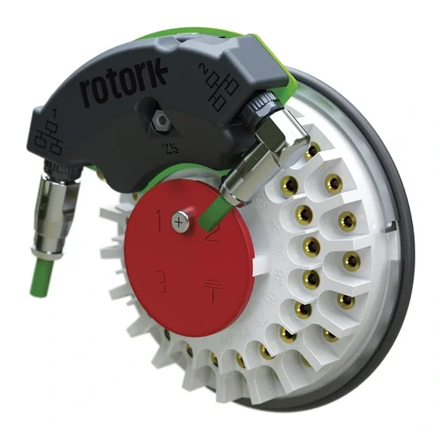

ROTORK · MASTER STATION & MẠNG TRUYỀN THÔNG
Master Station, Networks & Protocols
DeviceNet® is an Open Network Standard for communication networks using the main features of CAN bus in an industrial environment.The Rotork DeviceNet® interface module provides easy access to actuator process control and feedback information. The Electronic Data Sheet descriptio
 Ảnh sản phẩm chính thức
Ảnh sản phẩm chính thứcChính hãngNguồn gốc rõ ràng
CO/CQXuất xứ châu Âu
Bảo hànhBảo hành chính hãng
Lead timeGiao hàng nhanh
DANH SÁCH MODEL
Master Station, Networks & Protocols model
Master Station, Networks & Protocols
DeviceNet
DeviceNet® Open Network Standard for communication networks
Xem model →
Master Station, Networks & Protocols
Foundation Fieldbus
Foundation Fieldbus® field network control protocol
Xem model →
Master Station, Networks & Protocols
HART
HART® (Highway Addressable Remote Transducer) communication protocol
Xem model →

Master Station, Networks & Protocols
Master Station
Supervisory plant control and monitoring
Xem model →
Master Station, Networks & Protocols
Pakscan Classic (AIM)
Field network actuator Add In Module (AIM)
Xem model →Master Station, Networks & Protocols
Profibus
Profibus® network protocol for high speed data communications
Xem model →TÀI LIỆU
Thư viện tài liệu range
Datasheet, manual, brochure và certificate lấy từ nguồn chính thức Rotork.
Product BrochureDeviceNet — PUB058-001 - Network Compatibility - English↓
Product BrochureDeviceNet — PUB090-001 - Rotork DeviceNet brochure - English↓
ManualDeviceNet — PUB090-002 - Devicenet DFU Option Card Installation Manual - English↓
Product BrochureFoundation Fieldbus — PUB058-001 - Network Compatibility - English↓
Product BrochureFoundation Fieldbus — PUB089-001 - Rotork Foundation Fieldbus brochure - English↓
ManualFoundation Fieldbus — PUB060-007 - Foundation Fieldbus FF01 Mk2 Technical Manual - English↓
Product BrochureHART — PUB092-001 - Rotork HART brochure - English↓
ManualHART — PUB092-002 - CVA HART Field Unit Technical Manual DEV_REV1 - English↓
ManualHART — PUB092-003 - Hart Field Unit technical manual DEV_REV2 - English↓
Product BrochureIntegrated Ethernet — PUB190-002 - Integrated Ethernet Actuator flyer - English↓
ManualIntegrated Ethernet — PUB190-001 - EtherNet/IP Manual - English↓
ManualIntegrated Ethernet — PUB190-003 - PROFINET Manual - English↓
Product BrochureMaster Station — PUB059-047 - Rotork Master Station Sales Flyer - English↓
Product BrochureMaster Station — PUB059-048 - Rotork Master Station Sales Brochure - English↓
Product BrochureMaster Station — PUB059-055 - Rotork Master Station Security brochure - English↓
Product BrochureModbus — PUB058-001 - Network Compatibility - English↓
Product BrochureModbus — PUB091-001 - Rotork Modbus brochure - English↓
Technical InformationModbus — PUB055-011 - Installation and operating instructions for ST-4100 series AC line-powered transmitters - Legacy - English↓
Product BrochureProfibus — PUB058-001 - Network Compatibility - English↓
Product BrochureProfibus — PUB088-001 - Rotork Profibus brochure - English↓
Technical InformationProfibus — PUB088-002 - Device Type Manager (DTM) Solutions - English↓